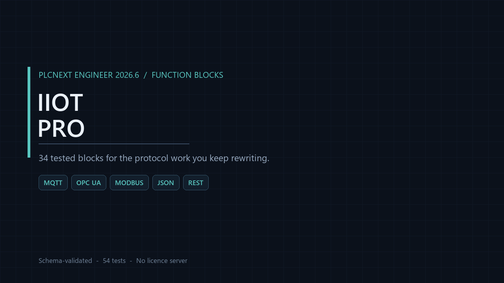

Stop rewriting protocol glue on every PLCnext project.
Thirty-four tested Structured Text function blocks for the encoding, parsing, validation and framing work that otherwise gets repeated on every industrial IoT job.

What is inside
- JSON (7) — escaping, string and numeric members, flat arrays, object merging, two-level
a.bpath extraction. - MQTT (7) — remaining-length codec, topic filter validation and
+/#matching, CONNECT/PUBLISH descriptors, CONNACK parsing and a QoS-2 handshake step. - OPC UA (6) — NodeId validation, method arguments, StatusCode classification, Read/Write/Browse descriptors.
- Modbus (8) — CRC-16 for 8 and 16 bytes, RTU request builder, response parsing for 4 or 8 registers, received-CRC verification, TCP MBAP header and exception text.
- REST (5) — CRLF-correct requests, response parsing, URL/form encoding, chunked detection and full chunked-body decoding.
- Common (1) — deterministic exponential backoff with bounded jitter.
What it is — and is not
The blocks implement protocol logic. They do not open sockets and do not call an OPC UA server. You pass validated descriptors and frames to the transport of your choice — Phoenix Contact IIOT_Library, GDS connectors or an HTTP client. docs/INTEGRATION.md maps every block to a transport, and docs/EXAMPLE.md contains a complete copyable example.
Third-party product, not affiliated with Phoenix Contact. Not safety-rated — keep safety interlocks in certified IEC 61131-3 code.
Verified
- Imported via
File → Import → Import From IEC 61131-10and rebuilt in PLCnext Engineer 2026.6 without errors. - All 34 exports validate against the official IEC 61131-10 XSD shipped with Engineer.
- 210 structural checks and 54 executable tests, including a 500-case MQTT codec round-trip and known Modbus CRC vectors.
- Unique GUID handles, deterministic XML generation, offline operation, no licence server.
What you get
34 individual POU XML files plus one merged XML for a single import, full Structured Text source, generated block manual, integration guide, worked example, and the Python reference model with tests and verifier. Free updates for the 1.x line.